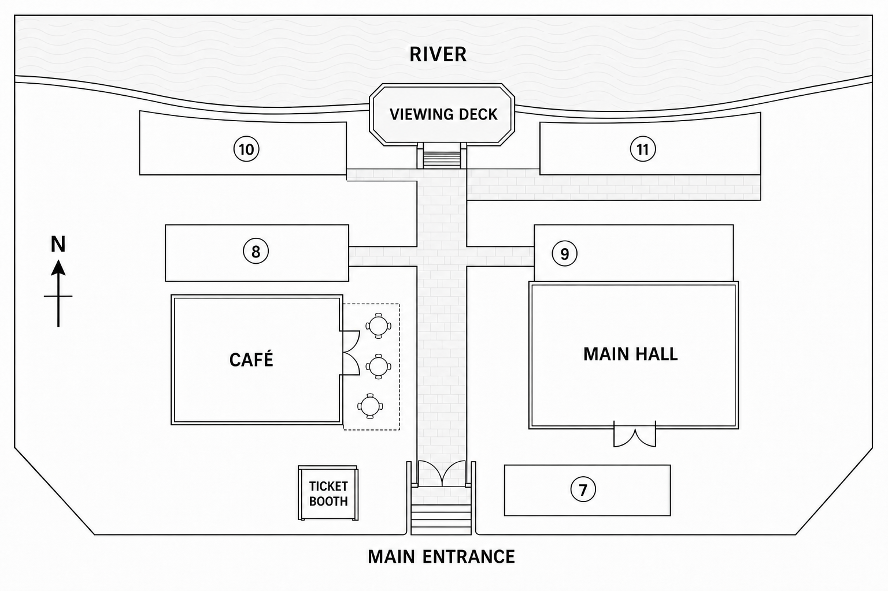

Three listening tasks
Make one natural first attempt, then use one replay to check what changed.
Community project briefing
You will hear a community centre manager giving a briefing about four upcoming projects.
Complete the table. Write NO MORE THAN TWO WORDS for each answer.
Missed one? Leave the box empty and stay with the recording.
Read across each row before you start.
Audio did not start. Open the MP3 backup.
| Project | Main job | Practical detail |
|---|---|---|
| 1. Riverside clean-up | Remove |
Meet at the |
| 2. Community garden | Plant |
Bring |
| 3. Museum archive | Scan |
Every |
| 4. Food bank drive | Check address labels | Arrive ten minutes early |
Riverside Arts Festival
You will hear a briefing about the layout of an arts festival.
Label the map. Write NO MORE THAN TWO WORDS for each answer.
If you lose the route, release that answer and restart from the next fixed landmark.
Find the Main Entrance, North arrow and fixed landmarks first.
Audio did not start. Open the MP3 backup.

Protecting museum objects
You will hear a short talk about protecting objects in museums.
Complete the notes. Write ONE WORD ONLY for each answer.
Keep moving. One missed word should not cost the next answer.
Predict the kind of word each gap needs.
Audio did not start. Open the MP3 backup.
Light and museum collections
- Strong light slowly removes an object’s
- One simple method is to fitover nearby windows.
- Modern displays may useto switch lights on.
- Some lamps produceand can dry out delicate materials.
- Museums limit display time by using a system of
Homework complete
Copy or save your results, then send them in your normal Preply lesson chat.